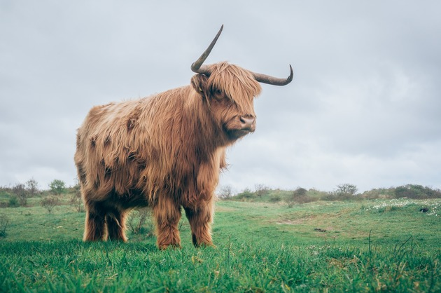

Impala
Aepyceros melampus
| Reino: | Animalia |
| Classe: | Mammalia |
A impala (Aepyceros melampus) é um antílope com 50 a 60 kg
de peso, único membro da subfamília de bovídeos Aepycerotinae. Vive em grandes manadas nas savanas
e é especialmente comum no sul da África. Elas podem correr a velocidades de 90 km/h e saltar cerca de 6
metros para fugir dos predadores, têm boa visão e audição e reflexos rápidos. Prefere zonas onde exista
capim de porte baixo ou médio, com uma fonte de água por perto, condição que pode ser desprezada caso a erva
seja abundante.
A espécie tem dimorfismo sexual, sendo a cabeça do macho ornamentada por chifres
elegantes, que podem atingir 1 metro de comprimento e se desenvolvem em forma de lira. A pelagem é castanho
avermelhada, escurecendo no rosto e no dorso, sendo que o ventre, os queixais, a linha dos olhos e a cauda
são brancos. Uma zona de pelos mais compridos do que os restantes, de cor preta, cobre-lhe os calcanhares. A
maturidade sexual é de 1 ano para os machos e 20 meses para as fêmeas, com um período de 195 a 200 dias de
gestação.
Abundante em Angola, toma, neste país, várias designações de acordo com as suas
línguas étnicas: m'pala em ganguela (ou nganguela), ompala em umbundu, kxara em
!kung e omhala em kwanyama (cuanhama).
Iaque
Bos grunniens
| Reino: | Animalia |
| Classe: | Mammalia |
O yak (Bos grunniens ou
Poephagus grunniens, um sinônimo não universalmente aceito) é um herbívoro de
pelagem longa encontrado na região do Himalaia, no sul da Ásia Central, Qinghai, no Planalto do Tibete, até
à Mongólia, a norte. Além de uma grande população doméstica, há uma população pequena e vulnerável de iaques
selvagens. Em Tibetano, a palavra gyag refere-se só ao macho da espécie; uma fêmea é uma
dri ou nak. O resultado do cruzamento de um iaque com o zebu é conhecido como
"chauri".
Os iaques são animais de rebanho. Os iaques macho selvagens podem atingir 2,2 metros
de comprimento, as fêmeas aproximadamente um terço daquele tamanho, e iaques domesticados 1,6-1,8 metros.
Ambos os tipos têm o pelo longo e desgrenhado para isolá-los do frio. Os iaques selvagens podem ser marrons
ou pretos. Os domesticados também podem ser brancos. Tanto os machos como as fêmeas têm chifres.
Os iaques domésticos acasalam por volta de Setembro; as fêmeas podem conceber com
3-4 anos de idade, parem de Abril a Junho cada dois ou três anos, ao que parece dependendo da provisão
alimentar. O período de gestação é de aproximadamente nove meses. Os bezerros são desmamados em um ano e
ficam independentes logo depois disso. Os iaques podem viver mais de 20 anos.